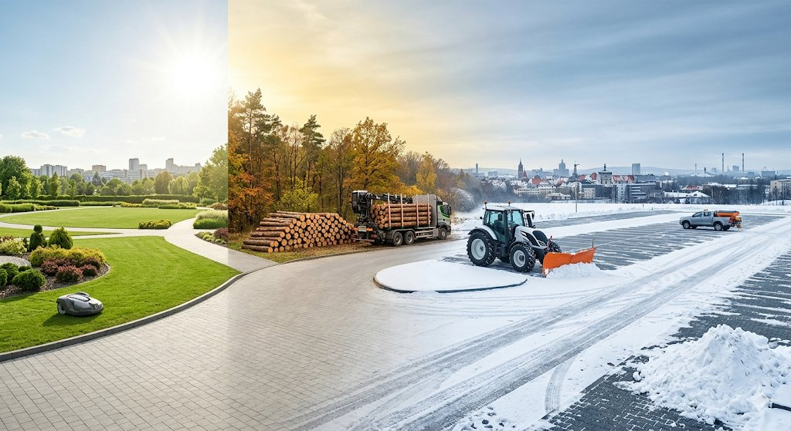
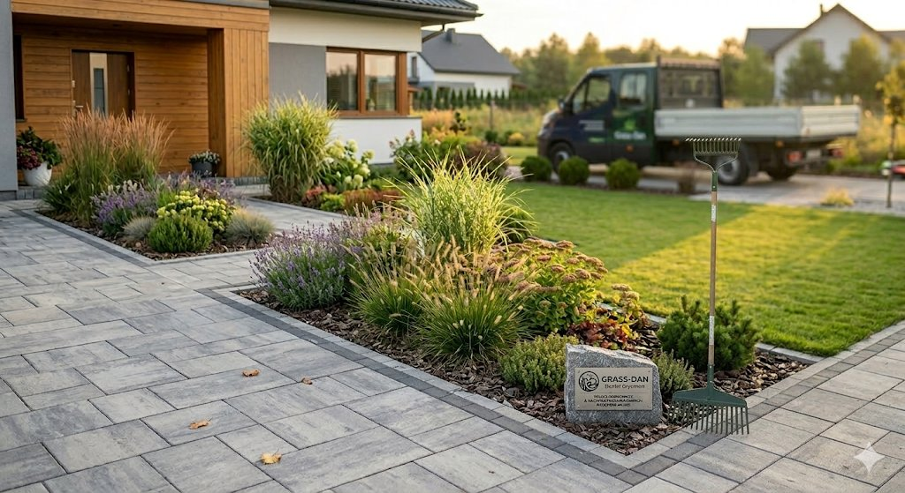
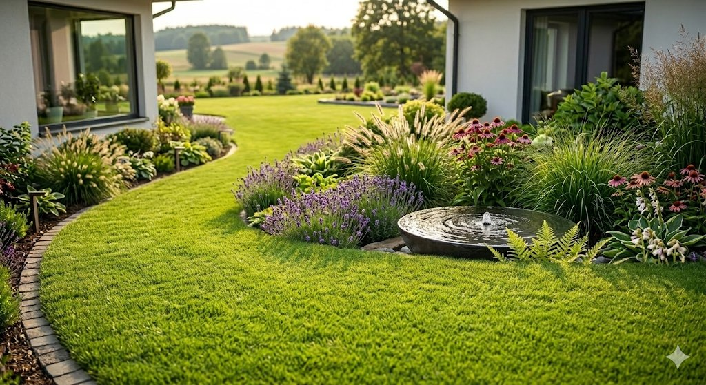
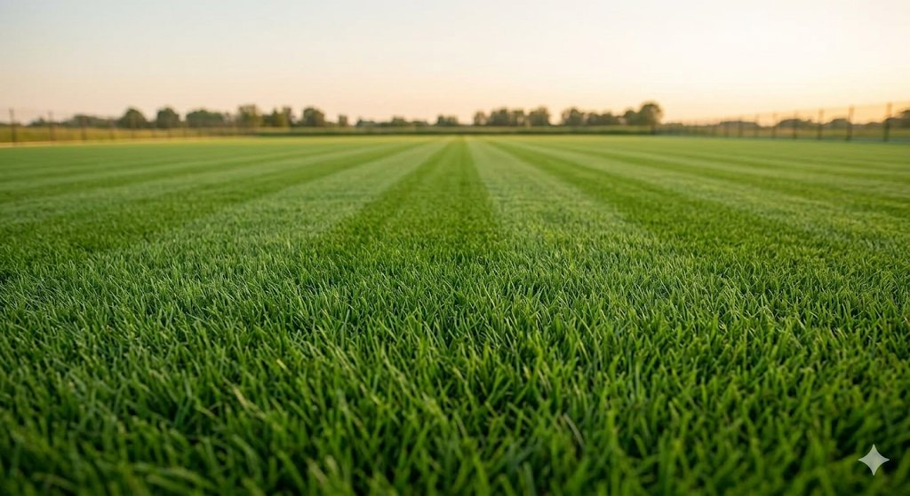
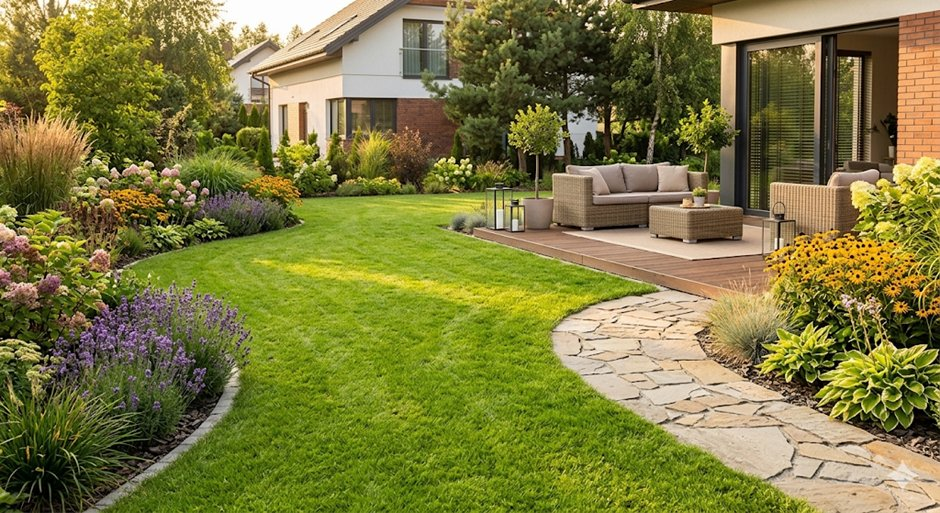

Profesjonalne usługi ogrodnicze i architektura krajobrazu. Projektujemy, zakładamy i pielęgnujemy zielone przestrzenie, które cieszą oczy i duszę.

Grass-Dan to firma założona przez Daniela Grycmana, specjalizująca się w kompleksowych usługach ogrodniczych oraz architekturze krajobrazu. Od ponad 9 lat tworzymy piękne, funkcjonalne przestrzenie zielone dla klientów indywidualnych i biznesowych.
Każdy projekt traktujemy indywidualnie — od wstępnej wizji, przez precyzyjne planowanie, aż po realizację i późniejszą pielęgnację. Nasza praca to połączenie wiedzy ogrodniczej z kreatywnym podejściem do designu.
Kompleksowa obsługa ogrodów — od projektu po codzienną pielęgnację.
Regularne koszenie, aeracja, wertykulacja i nawożenie — Twój trawnik będzie wyglądał idealnie przez cały sezon.
Indywidualne projekty zieleni dopasowane do Twoich potrzeb, terenu i stylu życia. Wizualizacje 2D i 3D.
Dobór i nasadzenia drzew, krzewów, bylin i traw ozdobnych. Tworzymy kompozycje, które kwitną cały rok.
Kostka brukowa, kamień naturalny, drewno — projektujemy i układamy estetyczne nawierzchnie ogrodowe.
Przycinanie, formowanie, ochrona roślin na zimę i wiosenne porządki. Dbamy o Twój ogród przez cały rok.
Profesjonalna wycinka, przesadzanie i formowanie drzew oraz krzewów ozdobnych i owocowych.
Każdy ogród to unikalna historia — oto niektóre z naszych realizacji.



Łączymy pasję z profesjonalizmem, by Twój ogród wyglądał najlepiej.
Ponad 9 lat w branży ogrodniczej i setki zrealizowanych projektów.
Każdy ogród traktujemy jak własny — z pełnym zaangażowaniem i dbałością o detale.
Szanujemy Twój czas — realizujemy projekty zgodnie z ustalonym harmonogramem.
Pracujemy wyłącznie z najlepszymi materiałami i sadzonkami od sprawdzonych dostawców.
Skontaktuj się z nami, aby uzyskać bezpłatną wycenę lub porozmawiać o Twoich pomysłach na ogród.
ul. Krzyżkowicka 19A
44-285 Rzuchów
+48 XXX XXX XXX
kontakt@grassdan.pl
Kliknij poniżej, aby otworzyć swojego klienta poczty z przygotowaną wiadomością.
Wyślij email ZadzwońPon–Pt: 7:00 – 18:00
Sob: 8:00 – 14:00